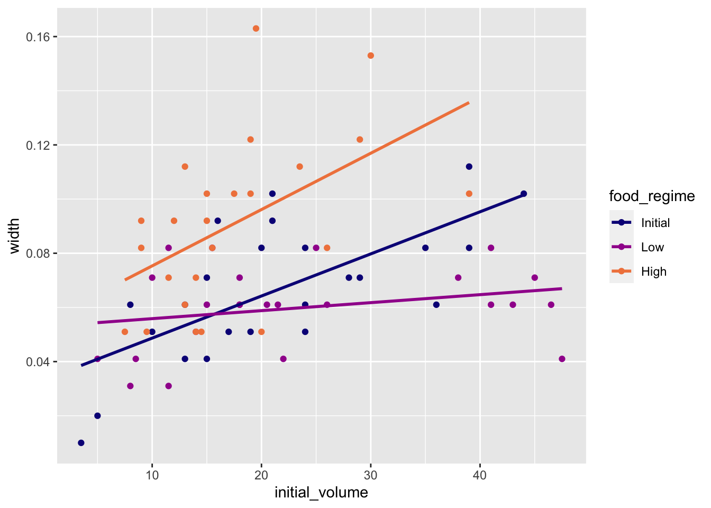
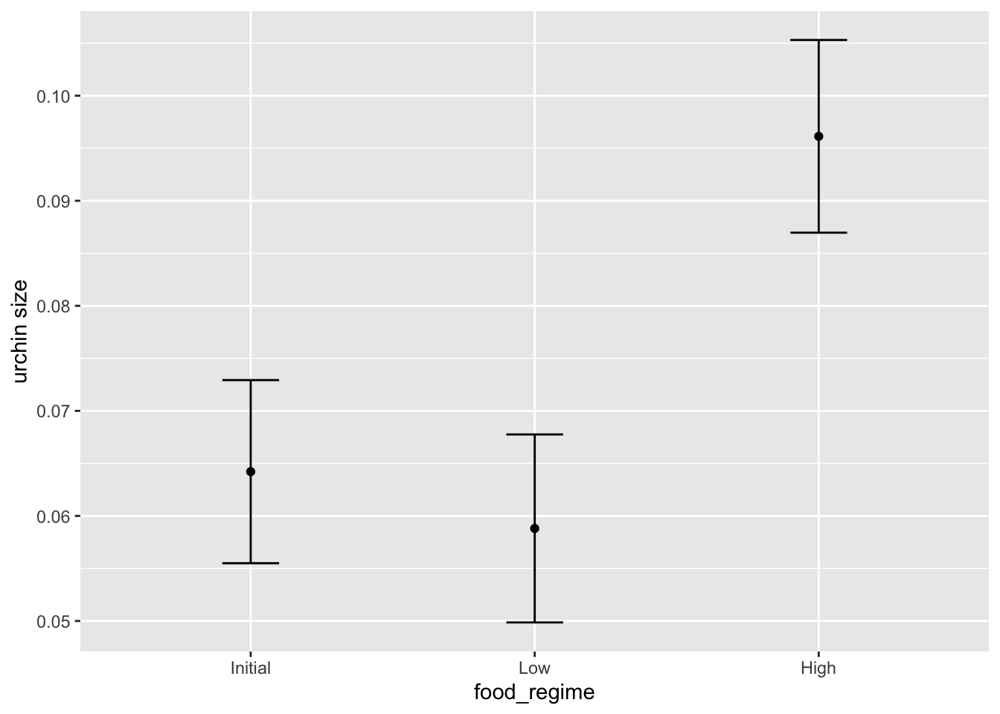

Chapter 8 Cross-references
Cross-references make it easier for your readers to find and link to elements in your book.
8.1 Chapters and sub-chapters
There are two steps to cross-reference any heading:
- Label the heading:
# Hello world {#nice-label}.- Leave the label off if you like the automated heading generated based on your heading title: for example,
# Hello world=# Hello world {#hello-world}. - To label an un-numbered heading, use:
# Hello world {-#nice-label}or{# Hello world .unnumbered}.
- Leave the label off if you like the automated heading generated based on your heading title: for example,
- Next, reference the labeled heading anywhere in the text using
\@ref(nice-label); for example, please see Chapter 8.- If you prefer text as the link instead of a numbered reference use: any text you want can go here.
8.2 Captioned figures and tables
Figures and tables with captions can also be cross-referenced from elsewhere in your book using \@ref(fig:chunk-label) and \@ref(tab:chunk-label), respectively.
See Figure 8.1.
par(mar = c(4, 4, .1, .1))
plot(pressure, type = 'b', pch = 19)
Figure 8.1: Here is a nice figure!
Don’t miss Table 8.1.
knitr::kable(
head(pressure, 10), caption = 'Here is a nice table!',
booktabs = TRUE
)| temperature | pressure |
|---|---|
| 0 | 0.0002 |
| 20 | 0.0012 |
| 40 | 0.0060 |
| 60 | 0.0300 |
| 80 | 0.0900 |
| 100 | 0.2700 |
| 120 | 0.7500 |
| 140 | 1.8500 |
| 160 | 4.2000 |
| 180 | 8.8000 |
https://www.tidymodels.org/start/models/
Use sea urchins data
urchins <-
read_csv("https://tidymodels.org/start/models/urchins.csv") %>%
setNames(c("food_regime", "initial_volume", "width")) %>%
mutate(food_regime = factor(food_regime, levels = c("Initial", "Low", "High")))## Rows: 72 Columns: 3## ── Column specification ──────────────────────────────
## Delimiter: ","
## chr (1): TREAT
## dbl (2): IV, SUTW##
## ℹ Use `spec()` to retrieve the full column specification for this data.
## ℹ Specify the column types or set `show_col_types = FALSE` to quiet this message.urchins## # A tibble: 72 × 3
## food_regime initial_volume width
## <fct> <dbl> <dbl>
## 1 Initial 3.5 0.01
## 2 Initial 5 0.02
## 3 Initial 8 0.061
## 4 Initial 10 0.051
## 5 Initial 13 0.041
## 6 Initial 13 0.061
## 7 Initial 15 0.041
## 8 Initial 15 0.071
## 9 Initial 16 0.092
## 10 Initial 17 0.051
## # … with 62 more rowsAs a first step in modeling, it’s always a good idea to plot the data
ggplot(urchins,
aes(x = initial_volume,
y = width,
group = food_regime,
col = food_regime)) +
geom_point() +
geom_smooth(method = lm, se = FALSE) +
scale_color_viridis_d(option = "plasma", end = .7)## `geom_smooth()` using formula 'y ~ x'
# create linear model
lm_mod <- linear_reg() %>% set_engine("lm")
# fit data
lm_fit <- lm_mod %>%
fit(width ~ initial_volume * food_regime, data = urchins)
lm_fit## parsnip model object
##
## Fit time: 3ms
##
## Call:
## stats::lm(formula = width ~ initial_volume * food_regime, data = data)
##
## Coefficients:
## (Intercept)
## 0.0331216
## initial_volume
## 0.0015546
## food_regimeLow
## 0.0197824
## food_regimeHigh
## 0.0214111
## initial_volume:food_regimeLow
## -0.0012594
## initial_volume:food_regimeHigh
## 0.0005254tidy(lm_fit)## # A tibble: 6 × 5
## term estimate std.error statistic p.value
## <chr> <dbl> <dbl> <dbl> <dbl>
## 1 (Intercept) 3.31e-2 0.00962 3.44 1.00e-3
## 2 initial_volume 1.55e-3 0.000398 3.91 2.22e-4
## 3 food_regimeLow 1.98e-2 0.0130 1.52 1.33e-1
## 4 food_regimeHigh 2.14e-2 0.0145 1.47 1.45e-1
## 5 initial_volume… -1.26e-3 0.000510 -2.47 1.62e-2
## 6 initial_volume… 5.25e-4 0.000702 0.748 4.57e-1tidy(lm_fit) %>%
dwplot(dot_args = list(size = 2, color = "black"),
whisker_args = list(color = "black"),
vline = geom_vline(xintercept = 0, colour = "grey50", linetype = 2))
Use a model to predict
new_points <- expand.grid(initial_volume = 20,
food_regime = c("Initial", "Low", "High"))
new_points## initial_volume food_regime
## 1 20 Initial
## 2 20 Low
## 3 20 High#> initial_volume food_regime
#> 1 20 Initial
#> 2 20 Low
#> 3 20 Highmean_pred <- predict(lm_fit, new_data = new_points)
mean_pred## # A tibble: 3 × 1
## .pred
## <dbl>
## 1 0.0642
## 2 0.0588
## 3 0.0961conf_int_pred <- predict(lm_fit,
new_data = new_points,
type = "conf_int")
conf_int_pred## # A tibble: 3 × 2
## .pred_lower .pred_upper
## <dbl> <dbl>
## 1 0.0555 0.0729
## 2 0.0499 0.0678
## 3 0.0870 0.105#> # A tibble: 3 x 2
#> .pred_lower .pred_upper
#> <dbl> <dbl>
#> 1 0.0555 0.0729
#> 2 0.0499 0.0678
#> 3 0.0870 0.105
# Now combine:
plot_data <-
new_points %>%
bind_cols(mean_pred) %>%
bind_cols(conf_int_pred)
# and plot:
ggplot(plot_data, aes(x = food_regime)) +
geom_point(aes(y = .pred)) +
geom_errorbar(aes(ymin = .pred_lower,
ymax = .pred_upper),
width = .2) +
labs(y = "urchin size") Model with different engine: Bayesian analysis
# set prior distribution
prior_dist <- rstanarm::student_t(df = 1)
set.seed(123)
# make the parsnip model
bayes_mod <-
linear_reg() %>%
set_engine("stan",
prior_intercept = prior_dist,
prior = prior_dist)
# train model
bayes_fit <-
bayes_mod %>%
fit(width ~ initial_volume * food_regime, data = urchins)
print(bayes_fit, digits=5)## parsnip model object
##
## Fit time: 9.1s
## stan_glm
## family: gaussian [identity]
## formula: width ~ initial_volume * food_regime
## observations: 72
## predictors: 6
## ------
## Median MAD_SD
## (Intercept) 0.03281 0.00992
## initial_volume 0.00157 0.00041
## food_regimeLow 0.01990 0.01286
## food_regimeHigh 0.02136 0.01519
## initial_volume:food_regimeLow -0.00126 0.00052
## initial_volume:food_regimeHigh 0.00052 0.00073
##
## Auxiliary parameter(s):
## Median MAD_SD
## sigma 0.02144 0.00192
##
## ------
## * For help interpreting the printed output see ?print.stanreg
## * For info on the priors used see ?prior_summary.stanregtidy(bayes_fit, conf.int = TRUE)## # A tibble: 6 × 5
## term estimate std.error conf.low conf.high
## <chr> <dbl> <dbl> <dbl> <dbl>
## 1 (Intercept) 3.28e-2 0.00992 1.68e-2 0.0488
## 2 initial_volume 1.57e-3 0.000405 8.93e-4 0.00224
## 3 food_regimeLow 1.99e-2 0.0129 -1.40e-3 0.0420
## 4 food_regimeHi… 2.14e-2 0.0152 -3.56e-3 0.0464
## 5 initial_volum… -1.26e-3 0.000516 -2.10e-3 -0.000407
## 6 initial_volum… 5.17e-4 0.000732 -6.91e-4 0.00171bayes_plot_data <-
new_points %>%
bind_cols(predict(bayes_fit, new_data = new_points)) %>%
bind_cols(predict(bayes_fit, new_data = new_points, type = "conf_int"))
ggplot(bayes_plot_data, aes(x = food_regime)) +
geom_point(aes(y = .pred)) +
geom_errorbar(aes(ymin = .pred_lower, ymax = .pred_upper), width = .2) +
labs(y = "urchin size") +
ggtitle("Bayesian model with t(1) prior distribution")
Xie, Yihui. 2015. Dynamic Documents with R and Knitr. 2nd ed. Boca Raton, Florida: Chapman; Hall/CRC. http://yihui.org/knitr/.
———. 2021. Bookdown: Authoring Books and Technical Documents with r Markdown. https://CRAN.R-project.org/package=bookdown.
This is a footnote.↩︎